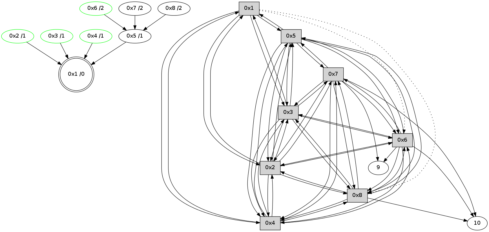

>> << IDX [start] -100 -25 -5 +0 +5 +25 +100 [345.326406956]
 Previous packets
340.045381 [Hello(1): seq=163 sym=5,3,2,4 asym=8,6 sysInfo= stat=5:10,0,5,0/3:14,0,5,1/2:8,0,5,1/4:12,0,4,1/8:14,0,4,0/6:9,0,4,1]
----------------------------------------------------------------------
340.597589 beacon01(11f6) #0 coord=01,02,03,04,05,06,07,08,0a,09 cycle=688.0ms assoc
-- color-indic=0 64 9b c9
340.607754 beacon02(11f6) #0 coord=01,02,03,04,05,06,07,08,0a,09 cycle=688.0ms assoc 64 08 f8
340.617724 beacon03(11f6) #0 coord=01,02,03,04,05,06,07,08,0a,09 cycle=688.0ms assoc 64 72 b5
340.627723 beacon04(11f6) #0 coord=01,02,03,04,05,06,07,08,0a,09 cycle=688.0ms assoc 64 05 5f
340.637724 beacon05(11f6) #0 coord=01,02,03,04,05,06,07,08,0a,09 cycle=688.0ms assoc 64 7f 12
340.647725 beacon06(11f6) #0 coord=01,02,03,04,05,06,07,08,0a,09 cycle=688.0ms assoc 64 f1 c5
340.657725 beacon07(11f6) #0 coord=01,02,03,04,05,06,07,08,0a,09 cycle=688.0ms assoc 64 8b 88
340.735314 [Hello(4): seq=163 sym=1,2,5,6,3,8,7 sysInfo= stat=1:2,0,5,0/2:9,0,5,1/5:12,0,5,0/6:4,0,5,1/3:14,0,4,0/8:12,0,4,0/7:15,0,5,0]
340.741171 [Hello(3): seq=163 sym=1,2,7,5,6,8,4 sysInfo= stat=1:3,0,5,0/2:9,0,5,1/7:10,0,5,0/5:10,0,4,0/6:4,0,5,1/8:12,0,4,0/4:13,0,4,1]
340.747909 [Hello(5): seq=163 sym=1,2,7,6,3,8,4 sysInfo= stat=1:3,0,5,0/2:8,0,5,1/7:13,0,5,0/6:6,0,4,1/3:13,0,5,1/8:12,0,4,0/4:14,0,4,1]
340.772917 [Hello(6): seq=163 sym=10,7,5,3,8,4,2,9 sysInfo= stat=10:11,0,2,0/7:2,0,5,0/5:5,0,5,0/3:2,0,5,1/8:12,0,4,0/4:7,0,3,1/2:11,0,5,1/9:6,0,4,0]
340.786283 [STC(1) #0.6 to-color d=0]
340.793426 [Hello(2): seq=163 sym=1,7,5,3,8,4,6 sysInfo= stat=1:2,0,6,0/7:9,0,5,0/5:11,0,5,0/3:11,0,5,0/8:12,0,4,0/4:11,0,4,1/6:15,0,4,1]
340.797584 [STC(2)->1 #0.6 stable,to-color d=1]
340.800505 [TreeStatus(2)-.->1 #0.6 stable child=1]
340.832261 [Hello(7): seq=163 sym=10,5,6,8,3,2,4,9 sysInfo= stat=10:12,0,3,0/5:3,0,5,0/6:15,0,4,1/8:15,0,4,0/3:7,0,5,1/2:10,0,6,1/4:5,0,3,0/9:15,0,4,0]
340.837315 [Hello(8): seq=163 sym=2,7,5,6,3,4,10 sysInfo= stat=2:11,0,6,2/7:4,0,5,0/5:2,0,4,0/6:15,0,4,1/3:14,0,5,1/4:10,0,3,1/10:4,0,2,0]
----------------------------------------------------------------------
341.385725 beacon01(11f6) #0 coord=01,02,03,04,05,06,07,08,0a,09 cycle=688.0ms assoc
-- color-indic=0 64 27 cc
341.395901 beacon02(11f6) #0 coord=01,02,03,04,05,06,07,08,0a,09 cycle=688.0ms assoc 64 b4 fd
341.405861 beacon03(11f6) #0 coord=01,02,03,04,05,06,07,08,0a,09 cycle=688.0ms assoc 64 ce b0
341.415862 beacon04(11f6) #0 coord=01,02,03,04,05,06,07,08,0a,09 cycle=688.0ms assoc 64 b9 5a
341.425863 beacon05(11f6) #0 coord=01,02,03,04,05,06,07,08,0a,09 cycle=688.0ms assoc 64 c3 17
341.435861 beacon06(11f6) #0 coord=01,02,03,04,05,06,07,08,0a,09 cycle=688.0ms assoc 64 4d c0
341.445862 beacon07(11f6) #0 coord=01,02,03,04,05,06,07,08,0a,09 cycle=688.0ms assoc 64 37 8d
341.455865 beacon08(11f6) #0 coord=01,02,03,04,05,06,07,08,0a,09 cycle=688.0ms assoc 64 b2 1c
341.491252 [Hello(1): seq=164 sym=5,3,2,4 asym=8,6 sysInfo= stat=5:11,0,5,0/3:15,0,5,1/2:9,0,6,2/4:13,0,4,1/8:15,0,4,0/6:10,0,4,1]
341.511138 [STC(3)->1 #0.6 stable,to-color d=1]
341.514039 [TreeStatus(3)-.->1 #0.6 stable child=1]
341.542493 [STC(5)->1 #0.6 to-color d=1]
341.561317 [STC(6)->5-.->1 #0.6 stable,to-color d=2]
341.563613 [TreeStatus(6)-.->1 #0.6 stable child=1]
341.619505 [STC(7)->5-.->1 #0.6 to-color d=2]
341.634126 [STC(4)->1 #0.6 stable,to-color d=1]
341.636068 [TreeStatus(4)-.->1 #0.6 stable child=1]
341.638992 [STC(8)->5-.->1 #0.6 to-color d=2]
----------------------------------------------------------------------
342.173861 beacon01(11f6) #0 coord=01,02,03,04,05,06,07,08,0a,09 cycle=688.0ms assoc
-- color-indic=0 64 e3 c2
342.184019 beacon02(11f6) #0 coord=01,02,03,04,05,06,07,08,0a,09 cycle=688.0ms assoc 64 70 f3
342.193997 beacon03(11f6) #0 coord=01,02,03,04,05,06,07,08,0a,09 cycle=688.0ms assoc 64 0a be
342.203996 beacon04(11f6) #0 coord=01,02,03,04,05,06,07,08,0a,09 cycle=688.0ms assoc 64 7d 54
342.213996 beacon05(11f6) #0 coord=01,02,03,04,05,06,07,08,0a,09 cycle=688.0ms assoc 64 07 19
342.223998 beacon06(11f6) #0 coord=01,02,03,04,05,06,07,08,0a,09 cycle=688.0ms assoc 64 89 ce
342.233997 beacon07(11f6) #0 coord=01,02,03,04,05,06,07,08,0a,09 cycle=688.0ms assoc 64 f3 83
342.244001 beacon08(11f6) #0 coord=01,02,03,04,05,06,07,08,0a,09 cycle=688.0ms assoc 64 76 12
342.284267 [Hello(7): seq=164 sym=10,5,6,8,3,2,4,9 sysInfo= stat=10:12,0,3,0/5:3,0,6,0/6:15,0,5,2/8:0,0,5,0/3:7,0,6,2/2:10,0,6,1/4:5,0,4,1/9:15,0,4,0]
342.293891 [Hello(5): seq=164 sym=1,2,7,6,3,8,4 sysInfo= stat=1:4,0,6,0/2:9,0,6,2/7:15,0,6,0/6:7,0,5,2/3:13,0,6,2/8:13,0,5,0/4:14,0,5,2]
342.333249 PARSE ERROR************************
Traceback (most recent call last):
File "PacketAnalysis.py", line 167, in showOperaPacket
structPacket = OperaPacketParse.parsePacket(rawPacket)
File "/home/user/HgRep/OCARI-2014/Sniffer-OPERA/OperaPacketParse.py", line 461, in parsePacket
return parseHelloMessage(data)
File "/home/user/HgRep/OCARI-2014/Sniffer-OPERA/OperaPacketParse.py", line 109, in parseHelloMessage
sysInfo,stability,colorInfo = struct.unpack("!HBB", linkList[0:4])
error: unpack requires a string argument of length 4
48 2c 02 00 00 a4 00 02 02 0e 01 00 07 00 05 00 03 00 08 00 04 00 06 00 53 04 00 00 00 00 4c 0e 06 03 06 0b 06 0c 16 0b 05 0d 25 0b 25 0f 53 11
342.337936 [Hello(8): seq=164 sym=2,7,5,6,3,4,10 sysInfo= stat=2:11,0,6,2/7:5,0,6,0/5:3,0,5,0/6:15,0,5,2/3:14,0,6,2/4:10,0,4,2/10:4,0,2,0]
342.381544 [Hello(6): seq=164 sym=10,7,5,3,8,4,2,9 sysInfo= stat=10:12,0,3,1/7:4,0,6,0/5:6,0,6,0/3:2,0,6,2/8:13,0,5,0/4:7,0,4,2/2:12,0,6,1/9:8,0,5,1]
342.392554 [Hello(3): seq=164 sym=1,2,7,5,6,8,4 sysInfo= stat=1:4,0,6,0/2:11,0,6,2/7:12,0,6,0/5:12,0,5,0/6:6,0,6,2/8:13,0,5,0/4:13,0,5,2]
342.399533 [Hello(4): seq=164 sym=1,2,5,6,3,8,7 sysInfo= stat=1:3,0,6,0/2:11,0,6,2/5:14,0,6,0/6:6,0,6,2/3:0,0,5,1/8:14,0,5,0/7:1,0,6,0]
----------------------------------------------------------------------
342.961997 beacon01(11f6) #0 coord=01,02,03,04,05,06,07,08,0a,09 cycle=688.0ms assoc
-- color-indic=0 64 5f c7
342.972157 beacon02(11f6) #0 coord=01,02,03,04,05,06,07,08,0a,09 cycle=688.0ms assoc 64 cc f6
342.982133 beacon03(11f6) #0 coord=01,02,03,04,05,06,07,08,0a,09 cycle=688.0ms assoc 64 b6 bb
342.992132 beacon04(11f6) #0 coord=01,02,03,04,05,06,07,08,0a,09 cycle=688.0ms assoc 64 c1 51
343.002133 beacon05(11f6) #0 coord=01,02,03,04,05,06,07,08,0a,09 cycle=688.0ms assoc 64 bb 1c
343.012134 beacon06(11f6) #0 coord=01,02,03,04,05,06,07,08,0a,09 cycle=688.0ms assoc 64 35 cb
343.022133 beacon07(11f6) #0 coord=01,02,03,04,05,06,07,08,0a,09 cycle=688.0ms assoc 64 4f 86
343.032137 beacon08(11f6) #0 coord=01,02,03,04,05,06,07,08,0a,09 cycle=688.0ms assoc 64 ca 17
343.103070 [TreeStatus(7)-.->1 #0.6 stable child=2]
343.135221 [Hello(1): seq=165 sym=5,3,2,4 asym=8,6 sysInfo= stat=5:12,0,6,0/3:0,0,6,2/2:10,0,6,2/4:14,0,5,2/8:15,0,5,0/6:11,0,5,2]
----------------------------------------------------------------------
343.750134 beacon01(11f6) #0 coord=01,02,03,04,05,06,07,08,0a,09 cycle=688.0ms assoc
-- color-indic=0 64 6b df
343.760308 beacon02(11f6) #0 coord=01,02,03,04,05,06,07,08,0a,09 cycle=688.0ms assoc 64 f8 ee
343.770269 beacon03(11f6) #0 coord=01,02,03,04,05,06,07,08,0a,09 cycle=688.0ms assoc 64 82 a3
343.780270 beacon04(11f6) #0 coord=01,02,03,04,05,06,07,08,0a,09 cycle=688.0ms assoc 64 f5 49
343.790270 beacon05(11f6) #0 coord=01,02,03,04,05,06,07,08,0a,09 cycle=688.0ms assoc 64 8f 04
343.800270 beacon06(11f6) #0 coord=01,02,03,04,05,06,07,08,0a,09 cycle=688.0ms assoc 64 01 d3
343.810270 beacon07(11f6) #0 coord=01,02,03,04,05,06,07,08,0a,09 cycle=688.0ms assoc 64 7b 9e
343.820274 beacon08(11f6) #0 coord=01,02,03,04,05,06,07,08,0a,09 cycle=688.0ms assoc 64 fe 0f
343.881838 [Hello(5): seq=165 sym=1,2,7,6,3,8,4 sysInfo= stat=1:5,0,6,0/2:10,0,6,2/7:15,0,6,1/6:8,0,5,2/3:14,0,6,2/8:13,0,5,0/4:15,0,5,2]
343.885383 [Hello(7): seq=165 sym=10,5,6,8,3,2,4,9 sysInfo= stat=10:12,0,4,1/5:4,0,6,0/6:0,0,5,2/8:0,0,5,0/3:8,0,6,2/2:11,0,6,1/4:5,0,4,1/9:0,0,5,1]
343.909154 [Hello(8): seq=165 sym=2,7,5,6,3,4,10 sysInfo= stat=2:12,0,6,2/7:6,0,6,1/5:4,0,5,0/6:0,0,5,2/3:15,0,6,2/4:11,0,4,2/10:4,0,3,1]
343.942543 [Hello(2): seq=165 sym=1,7,5,3,8,4,6 sysInfo= stat=1:4,0,6,0/7:12,0,6,1/5:13,0,6,0/3:12,0,6,1/8:14,0,5,0/4:12,0,5,2/6:0,0,5,2]
343.944992 [Hello(3): seq=165 sym=1,2,7,5,6,8,4 sysInfo= stat=1:5,0,6,0/2:11,0,6,2/7:13,0,6,1/5:13,0,5,0/6:6,0,6,2/8:14,0,5,0/4:14,0,5,2]
343.982166 [Hello(6): seq=165 sym=10,7,5,3,8,4,2,9 sysInfo= stat=10:12,0,3,1/7:5,0,6,1/5:7,0,6,0/3:4,0,6,2/8:14,0,5,0/4:7,0,4,2/2:12,0,6,1/9:9,0,5,1]
343.986979 [Hello(4): seq=165 sym=1,2,5,6,3,8,7 sysInfo= stat=1:4,0,6,0/2:12,0,6,2/5:15,0,6,0/6:6,0,6,2/3:1,0,5,1/8:15,0,5,0/7:2,0,6,1]
----------------------------------------------------------------------
344.538270 beacon01(11f6) #0 coord=01,02,03,04,05,06,07,08,0a,09 cycle=688.0ms assoc
-- color-indic=0 64 d7 da
344.548451 beacon02(11f6) #0 coord=01,02,03,04,05,06,07,08,0a,09 cycle=688.0ms assoc 64 44 eb
344.558405 beacon03(11f6) #0 coord=01,02,03,04,05,06,07,08,0a,09 cycle=688.0ms assoc 64 3e a6
344.568405 beacon04(11f6) #0 coord=01,02,03,04,05,06,07,08,0a,09 cycle=688.0ms assoc 64 49 4c
344.578407 beacon05(11f6) #0 coord=01,02,03,04,05,06,07,08,0a,09 cycle=688.0ms assoc 64 33 01
344.588405 beacon06(11f6) #0 coord=01,02,03,04,05,06,07,08,0a,09 cycle=688.0ms assoc 64 bd d6
344.598407 beacon07(11f6) #0 coord=01,02,03,04,05,06,07,08,0a,09 cycle=688.0ms assoc 64 c7 9b
344.608410 beacon08(11f6) #0 coord=01,02,03,04,05,06,07,08,0a,09 cycle=688.0ms assoc 64 42 0a
344.670422 [Hello(1): seq=166 sym=5,3,2,4 asym=8,6 sysInfo= stat=5:13,0,6,0/3:1,0,6,2/2:11,0,6,2/4:15,0,5,2/8:0,0,5,0/6:12,0,5,2]
344.674533 [STC(1) #0.7 to-color d=0]
344.725230 [STC(3)->1 #0.7 stable,to-color d=1]
344.727832 [TreeStatus(3)-.->1 #0.7 stable child=1]
344.768685 [STC(2)->1 #0.7 stable,to-color d=1]
344.772252 [TreeStatus(2)-.->1 #0.7 stable child=1]
344.788868 [STC(4)->1 #0.7 stable,to-color d=1]
344.791165 [TreeStatus(4)-.->1 #0.7 stable child=1]
344.792693 [STC(5)->1 #0.7 to-color d=1]